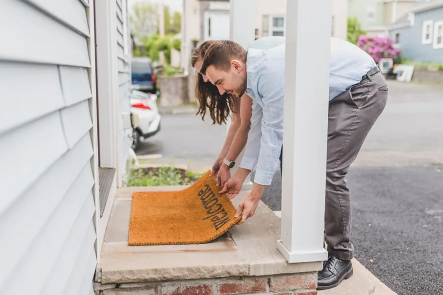
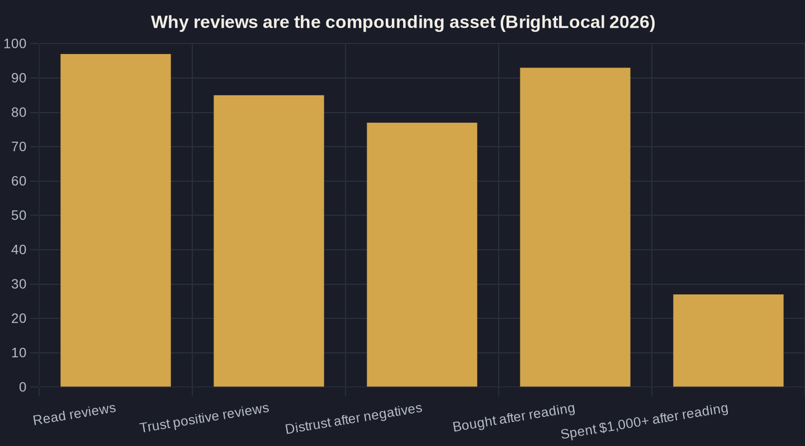

Local SEO vs Google Ads: Where Should Your Money Go?
It is not an either/or. Both compete on the same Google page, so the real decision is how to split your budget using real cost, conversion, and review numbers.

Key takeaways
- Local SEO vs Google Ads is a budget-split question, not an either/or - both channels compete for the same searcher on the same Google page.
- Ads buy speed and control, but every click is paid ($7.85 median CPC in home services); track cost per booked job, not cost per click.
- Local SEO buys an owned, compounding asset - 93% of consumers buy after reading reviews - but it is earned over months, not bought today.
- The phone usually decides the sale: 4 in 10 callers never reach a live person, so call handling can outweigh any budget shift between channels.
- Most local businesses should run both - ads for the floor, SEO for the ceiling - and fund SEO as a fixed monthly line they do not raid.
Local SEO vs Google Ads: the real question owners ask
Most owners frame it as a fork in the road: should I spend on local SEO or Google Ads? It is the wrong question. Both live on the same Google results page, and the only difference is whether you pay for the slot or earn it. Roughly 70% of online searches happen on Google, and 45% of consumers default to Google specifically for local searches, so the real decision was never Google yes or no.
The honest version of local SEO vs Google Ads is a budget-split question: how much of your money belongs in the paid slots you can buy today, and how much in the organic and map slots you earn over time. Both feed the same goal, a booked job at a known cost. If you want the full organic side of that equation, start with our pillar guide to local SEO for service businesses.
Think of the search page as real estate with two kinds of plots. The paid plots at the top go to whoever bids and converts best; the map pack and organic results below go to whoever has earned the strongest local signals. An owner can win either, and the smart ones win both. The question is sequencing and budget, not allegiance to a channel.
What Google Ads actually costs and buys
Google Ads buys speed and control. You can be at the top of the page this afternoon, choose exactly which searches you show for, and turn it off when you are full. The trade is that every click is paid. The 2026 LocaliQ benchmark puts the average search-ad cost per click at $5.42 with an 8.18% conversion rate across all industries, which means even a healthy campaign turns about 1 in 12 clicks into a lead.
For high-LTV trades the numbers run higher. Across 3,211 home-services campaigns, the median cost per click is $7.85 and the median conversion rate is 7.33%. That is why, in any local SEO vs Google Ads comparison, you track cost-per-result, the cost per booked job, not cost-per-click. A $7.85 click is cheap if it books a $9,000 system and expensive if it books nothing.
The discipline ads demand is measurement. Because you pay per click, a campaign that looks busy can quietly lose money if those clicks never book. The owners who win with paid search know their conversion rate, their cost per lead, and their close rate by heart, and they kill the keywords that spend without booking. Speed is the benefit; sloppiness is the tax.

What local SEO actually costs and buys
Local SEO buys an asset instead of renting attention. Your Google Business Profile, your map ranking, and your review profile keep working after you stop paying, and they compound. The catch is time: organic presence is earned over months, not bought in an afternoon. The payoff is trust money cannot buy directly. 97% of consumers read reviews for local businesses, and 85% say positive reviews make them more likely to use a business.
That trust converts to revenue, not just visibility. 93% of consumers say they have made a purchase after reading reviews, and 27% have spent more than $1,000 after reading them. This is the heart of the local SEO vs Google Ads tradeoff: paid clicks stop the day your card declines, while a strong profile keeps earning. Tighten the two assets that move the needle most, your Google Business Profile and your review flow.
There is also a defensive reason to fund organic presence. 77% of consumers say negative reviews make them less likely to choose a business, so a thin or neglected profile actively costs you jobs you already paid to put in front of people. Even a perfect ad sends the searcher to check your reviews before they call, which means your organic reputation quietly decides whether your paid clicks convert.
The phone is where ROAS gets decided
Here is the part both sides of the debate forget: for local service businesses, the phone is usually where the sale actually happens. A lead is not revenue until someone books. Invoca analyzed more than 60 million calls and found that 35% of calls from digital marketing are sales leads, 37% of those leads convert on the call, and 61% of callers reach a live person.
Read that last number again: 4 in 10 callers do not reach a person. Whether that lead came from an ad or from your map listing, what happens on the call decides your ROAS (return on ad spend). Fixing call handling often returns more than shifting budget between SEO and ads ever will. This is the kind of leak Owner's Math is built to catch.
This is why the SEO-versus-ads argument is often a distraction. You can double your ad budget and still lose if half your callers hit voicemail. Before you move a dollar between channels, count how many calls you missed last week; that single number reshapes more campaigns than any bid change.
| Factor | Google Ads | Local SEO |
|---|---|---|
| Time to first lead | Hours to days | Three to six-plus months |
| Typical cost per click (home services) | $7.85 median | $0 (organic clicks) |
| When you stop paying | Leads stop immediately | Leads keep coming |
| What you are paying for | Rented attention (the ad account) | Owned assets (profile + reviews) |
| Best at | Speed, control, testing demand | Compounding trust, lower long-run cost |
| Search conversion benchmark | 7.33% (home services) | Review-driven; 85% trust positives |

Local SEO vs Google Ads: a side-by-side
Put side by side, local SEO vs Google Ads is less a rivalry than a division of labor: one buys speed, the other buys durability. Here is how the two compare on the factors owners actually feel, from how fast leads arrive to what happens the day you stop paying.
How to split the budget (Owner's Math)
The split depends on where you are. If you are new, slow, or have a calendar to fill this month, weight toward Google Ads; it is the fastest honest way to buy booked jobs. If you are established and want your cost-per-lead to fall over time, fund local SEO so you stop renting every click. Most healthy local businesses run both: ads for the floor, SEO for the ceiling.
One caution: do not treat the SEO line as discretionary and raid it the first slow month. Organic presence compounds only if it is funded consistently; stop-start SEO gives you the cost without the compounding. Set it as a fixed monthly investment, like rent, and let the ads budget flex with demand.
A simple Owner's Math rule of thumb for the local SEO vs Google Ads split:
- Need leads in under 90 days: start with ads, and fund SEO as a fixed monthly line you do not raid.
- Map listing buried or thin on reviews: fix your Maps and 3-pack ranking first, because you are paying for clicks that organic could earn.
- Ads working but expensive: reinvest a slice of profit into reviews and content so the paid number can come down.
Where your money should go
So where should your money go? Not all to one side. Ads buy you tomorrow; local SEO buys you next year, and the phone decides whether either one pays. The owners who win treat it as a sequencing-and-measurement problem, not a loyalty test between two channels.
If you want the split done with real numbers, your CPC, your close rate on the phone, your cost per booked job, that is exactly what Owner's Math traces one dollar at a time. Read the local SEO pillar for the organic playbook, and if you would rather have someone trace your numbers with you, that is what a call or the newsletter is for.
Sources
Want this run on your numbers?
Book a call and we will run the Owner's Math on your business — clear numbers, a straight plan, no pitch. Or read the free Playbook first.